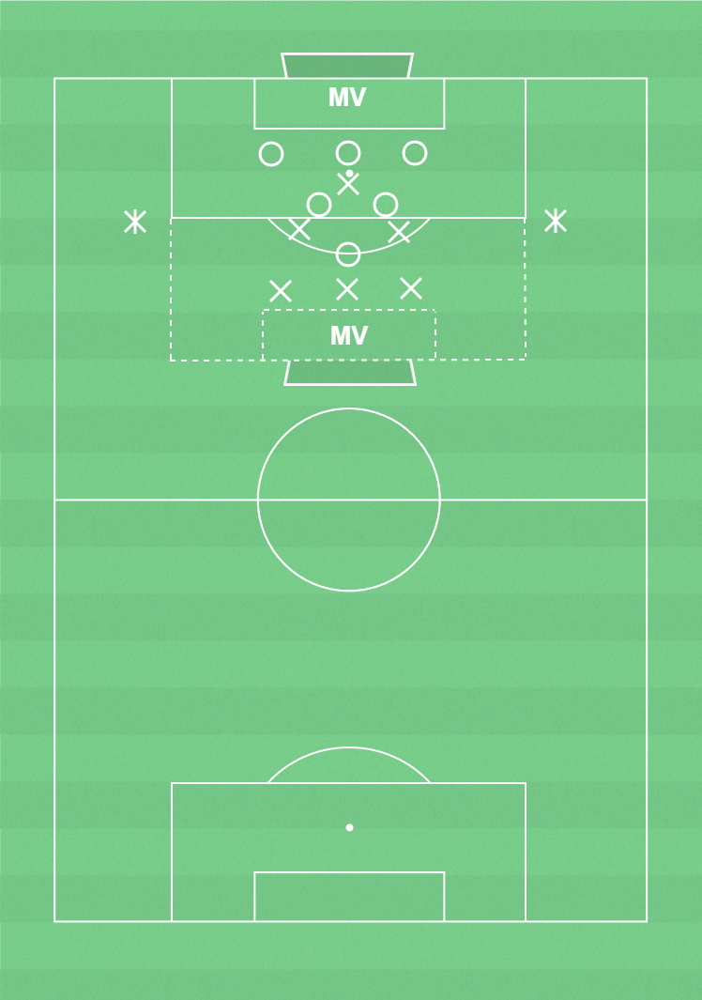

 ▶
▶
Förhindra och rädda avslut
För att förhindra mål.
Formation: 3-4-3
Arbetssätt Förhindra och rädda avslut:- Försvara avslut i straffområdet.
Utespelare:- Täck ytorna mellan stolparna med backlinje och MV.- Täck centrala ytor framför backlinjen med IMF.- FW spelbar för passning efter bollvinst.
Målvakter:- Värdera stå kvar för avslut eller kom ut på inlägg och instick.- Kommunicera med utspelare så att de kan förhindra avslut.- Fånga bollen eller stöt den bort från målet.
14-18 spelare, yta dubbla straffområden, västar, konor, bollar.
Två lag med lika många i varje. En joker som är med bollhållande lag på respektive långsida.
Uppgiften för bollhållande lag är att göra mål. Uppgiften för försvara
de lag är att förhindra mål och erövra bollen.
Fritt spel i ytan. Lagen kan gå direkt på avslut eller spela bollen till joker som inte får pressas. Jokrarna får använda max 2 tillslag.
Byt jokrar efter viss tid.